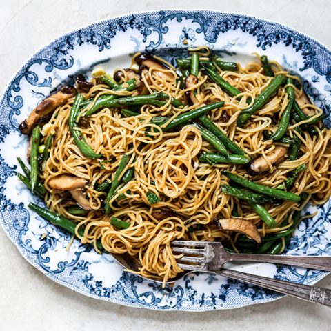

Home
Spaghetti with Green Beans

Description
A comforting plate of tender spaghetti topped with a creamy meat and bean sauce, gently seasoned and enriched with soured cream, garnished with fresh watercress for a crisp, peppery finish. This 30-minute recipe provides a simple, elegant, and delectable meal that requires minimal preparation.
Ingredients
- 12 oz. spaghetti salt and pepper
- 2 oz. butter
- 1 small packet of frozen green beans
- 6 oz. cooked salt beef
- 1x5 oz. carton soured cream
- 1 bunch of watercress
Preparation time
10 minutes
Cooking time
25 minutes
Steps
- Cook the spaghetti in a large saucepan of salted, boiling water for 12 minutes or until tender.
- Drain and keep hot.
- Meanwhile melt butter and fry defrosted beans for 5 minutes.
- Chop meat or cut into neat strips and add to pan with salt, pepper and the soured cream.
- Heat gently without boiling for 5 minutes.
- Put the spaghetti into a serving dish and add the sauce.
- Arrange watercress in a ring around the dish.
- Serve immediately.
Serves 4.